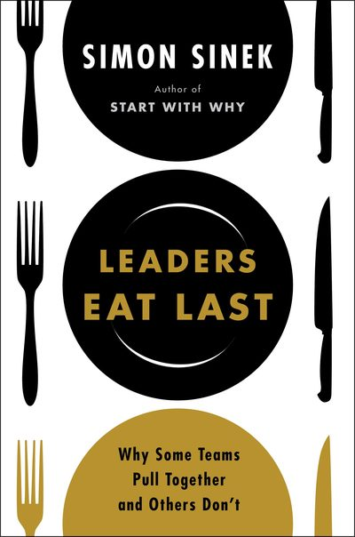

Library › Business & Startups
Leaders Eat Last — Summary & Key Lessons

Why some teams pull together and others don't — the biology of trust and the Circle of Safety.
📖 OPEN THE FULL INTERACTIVE BREAKDOWN →🌐 Read it in Hindi, Hinglish, Gujarati, Tamil & 22 more languages — free, with audio.
💡 The Big Idea
Sinek's anthropology of teams starts in the mess hall: Marine officers eat LAST, and everyone understands why — leadership is the willing sacrifice of the leader's advantages for the group's safety, repaid with loyalty no bonus can buy. The biology: four chemicals run team behavior — endorphins and DOPAMINE (individual performance drugs; dopamine is also the addiction behind metrics-chasing and phone-checking), SEROTONIN (the status/pride chemical — flows both ways between leader and led at moments of recognition) and OXYTOCIN (the trust chemical — built slowly through sacrifice, generosity and time, not through offsites). Great leaders build a CIRCLE OF SAFETY: inside it, people spend energy on the mission; outside it (in fear cultures), the same energy goes to politics, self-protection and resume-updating — danger inside the building is more corrosive than any competitor outside it. The modern diseases: leadership by numbers (abstraction — layoffs by spreadsheet — turns humans into figures, enabling cruelty no one would inflict face to face) and short-term sugar-highs (dopamine cultures) that cannibalize trust. The rule survives every case study: culture = what leaders sacrifice.
🧠 The 6 Key Lessons
Lesson 1: The Circle of Safety: Danger Inside Kills Faster Than Danger Outside
Parts 1-2
Every organization faces external threats (competitors, markets, technology change) — those are constants. The variable leaders control is INTERNAL danger: fear of layoffs, humiliation, politics, blame. When people feel unsafe inside, they spend their intelligence protecting themselves FROM EACH OTHER — hoarding information, managing optics, avoiding risk — and the organization pays full salary for a fraction of each brain. The Circle of Safety flips it: extend protection (job security where possible, honesty about hard times, defense against internal predators) to the whole circle, and the saved energy turns outward onto the actual mission. The tell of a healthy circle: people say 'I love my job' and mean the PEOPLE; the tell of a broken one: talented individuals, mediocre results, excellent resumes always up to date.
📖 Example: Bob Chapman at Barry-Wehmiller — Sinek's flagship: taking over struggling factories, Chapman refused the standard layoff playbook in the 2008 crash. Instead: EVERYONE — CEO included — took unpaid furlough weeks ('better we all suffer a little than any of us… Read the full example →
⚡ Do this: Find your circle's biggest internal fear (ask anonymously: 'what do people here protect themselves from?'). Take one visible action against it this month — a public commitment, a defended team member, a shared sacrifice from the top.
Lesson 2: The Chemistry of Teams: Manage the Four Drugs
Part 2: The Chemicals
ENDORPHINS mask effort-pain (the grind-through); DOPAMINE rewards hitting targets — useful, but addictive and blind to ethics: a culture of ONLY numbers becomes a culture of addicts optimizing hits (see: banking scandals, metric-gaming, phone addiction — same molecule). The social chemicals build organizations: SEROTONIN is pride flowing at recognition moments (graduations, awards — note it rewards BOTH the recognized and their mentor; ceremonies matter more than bonuses), OXYTOCIN is trust built through sacrifice witnessed, generosity without cameras, and physical time together — it cannot be shortcut, and it's the only chemical that makes people watch each other's backs. Leadership design: dopamine goals with serotonin ceremonies inside an oxytocin culture. Cultures that are all dopamine (sales boards, stack rankings, quarterly worship) get exactly what they chemically deserve: brilliant, anxious mercenaries.
📖 Example: Sinek's military spine: the Medal of Honor pattern — soldiers describing why they ran into fire never cite hate for the enemy; always love for the man beside them ('he would have done it for me'). That's oxytocin infrastructure built through months of shared… Read the full example →
⚡ Do this: Audit your team's chemical diet: list last month's dopamine hits (targets, dashboards), serotonin moments (public recognition — were mentors honored too?), and oxytocin deposits (unrequired help, shared meals, sacrifices seen). Schedule what's missing — literally calendar one recognition ritual and one no-agenda team meal.
Lesson 3: Abstraction Kills: Lead People, Not Numbers
Parts 4-5
Milgram's obedience experiments haunt this book: ordinary people administered (fake) lethal shocks when authority insisted — and compliance rose as the victim became more ABSTRACT (heard not seen, then neither). Modern management recreates the setup daily: 'reduce headcount by 12%' is psychologically painless in a spreadsheet and would be unbearable delivered face-to-face 400 times. Sinek's rules for staying human at scale: keep leaders physically close to the led (management by walking around isn't nostalgia; it's anti-abstraction), translate numbers back into people before deciding ('this line item is Priya, 11 years, two kids'), obey human-scale limits (Dunbar's ~150 — beyond it, design sub-circles with real leaders), and give TIME and ENERGY, not just money (a leader's attention is the currency teams actually feel). The integrity test that binds it all: do leaders absorb pain first and take rewards last — or the reverse? Every employee knows the answer within a week; strategy decks never survive contradicting it.
📖 Example: Sinek's parable of the two recessions: Barry-Wehmiller's shared furloughs versus the abstraction-native 2008 banks shedding tens of thousands by email while executive bonuses survived intact — both 'rational,' only one repaid in decade-long loyalty. His… Read the full example →
⚡ Do this: Before your next significant decision affecting people, run the abstraction check: write the names (not counts) of the five most affected humans and what the decision does to their Tuesday. If you can't defend it to their faces, redesign it — or deliver it in person and absorb the cost yourself.
Lesson 4: Destructive Abundance: When the Numbers Eat the People
Parts 6-7: Destructive Abundance
Sinek names the modern disease DESTRUCTIVE ABUNDANCE: organizations so successful that leaders lose contact with the humans the abstraction layers represent — and the checks that once bound leadership to its people dissolve. The mechanics: when performance metrics outrank purpose (dopamine culture), when leadership rotates through on short-term mandates (no shared future, no shared sacrifice), and when scale turns people into spreadsheet rows, companies begin cannibalizing the trust that built them — 'the leaders ate first, and eventually they ate the seed corn.' His historical hinge: the shift from 'shareholder value' as one output to THE purpose (Jack Welch-era doctrine) — and its human cost: layoffs as first resort (which teach every survivor that performance won't protect them, so self-interest becomes rational), bonuses decoupled from the led, and cultures where integrity means 'legal.' The repair prescriptions are structural, not sentimental: leaders paid within human distance of their people, tenure long enough to harvest what they plant, real costs (leaders absorbing pain first in downturns), and the integrity test run relentlessly — do words and actions match, especially when matching is expensive? Because trust, Sinek's whole book argues, is a biological response to observed sacrifice — and no communications strategy has ever fooled the oxytocin system for long.
📖 Example: Sinek's contrast pair: Costco under Jim Sinegal — wages and benefits far above retail norms, no layoffs in downturns, a CEO salary deliberately modest — mocked by Wall Street analysts for 'over-generosity,' while the company compounded returns that… Read the full example →
⚡ Do this: Run the destructive-abundance audit on your organization (or yourself as a leader): Is any metric currently outranking the mission in real decisions? When did leadership last absorb visible cost before the team did? Pick the worst answer and make one structural correction this quarter — a shared-sacrifice policy, a metric demoted, or a leader's perk converted into a team investment.
Lesson 5: The Leader Is the Anchor: Culture Is Set From the Top, Daily
Part 4: The Responsibility
Sinek's closing responsibility: leaders don't just inherit culture — they set it every single day through their visible choices, because people watch the leader for cues about what's really valued (not what's posted on the wall). The leader who stays late while others struggle, who takes blame publicly and credit privately, who protects the team from the board's panic — each act is a culture-setting broadcast. The cost of leadership is that you are always on: your mood, your decisions, your treatment of the weakest member are the curriculum. The organization eventually mirrors the leader's behaviour, not the leader's slogans. Eat last means the leader's needs genuinely come after the team's — and everyone knows the difference instantly.
📖 Example: Sinek recounts how Bob Chapman, CEO of Barry-Wehmeier, transformed a factory by changing the question from 'what do we need from employees?' to 'what do employees need from us?' — and the visible reversal of the leader's priorities changed the culture more… Read the full example →
⚡ Do this: This week, do one 'eat last' act: take public responsibility for a team failure, or give public credit for a success that was partly yours. Repeat weekly.
Lesson 6: The Chemistry of Belonging: Oxytocin and the Circle That Compounds
Part 2: The Chemistry
Sinek's biology of leadership: when people feel safe and cared for, their bodies produce oxytocin (the bonding chemical) — which increases trust, cooperation and generosity, and suppresses cortisol (the stress chemical) that makes people selfish and defensive. The practical translation: 'chemistry' isn't a metaphor — great cultures are literally chemically different. Acts of trust and care release oxytocin in the giver AND the receiver and even in observers, which is why one act of generosity can change a whole team's mood. The leader's job is to be the source of oxytocin — by showing you'd sacrifice for the team — because when the chemical flows, people give discretionary effort. Safety is not soft; it is the most productive state a human body has.
📖 Example: Sinek explains how the military's practice of leaders eating last (literally) isn't tradition — it's chemistry: every meal, the leader's sacrifice releases oxytocin in the unit, building the trust that makes soldiers risk their lives for each other. The… Read the full example →
⚡ Do this: Do one visible act of sacrifice for your team this week — give up something small you're entitled to (your seat, your share, your credit) — and notice the ripple in how people treat each other.
✅ 5-Step Action Plan
- Extend the Circle of Safety: attack the top internal fear with a visible leader sacrifice.
- Balance the chemicals: dopamine targets + serotonin ceremonies + oxytocin time.
- Eat last, literally: rewards flow to the team first, pain to leadership first.
- De-abstract every people-decision: names and faces before numbers.
- Guard human scale: sub-circles with real leaders once groups pass ~150.
⚠️ When This Doesn't Work
Sinek's 'leaders sacrifice for their people' is noble — and Yes Bank is its inversion: Rana Kapoor ate first, spectacularly — ₹3,000 crore in personal wealth, a lavish lifestyle funded by the bank — while depositors and employees were served last, and the bank collapsed under the weight of his appetites. The book assumes the leader's character; it underweights how often the leader's compensation structure quietly rewrites the culture. Leaders eat last only when the pay system makes it possible to do anything else.
💀 The Graveyard Proves It
💎 Rana Kapoor — 'Diamonds Are Forever' — Loans Weren't. Burn: A bank, and his freedom. Read the full case study →
💬 Best Quotes from Leaders Eat Last
- “Leadership is not a rank. It is a choice — the choice to look after the person to the left of you and the person to the right of you.”
- “The true price of leadership is the willingness to place the needs of others above your own.”
- “Trust is like lubrication. It reduces friction and creates conditions much more conducive to performance.”
Interactive version: mark lessons as read, listen in your language, share quote cards.